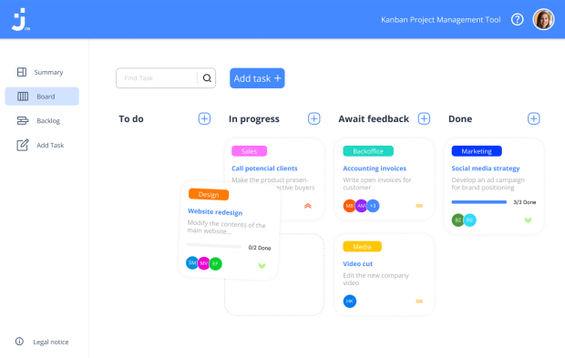

<section>
    <div class="mainContainer">
        <div class="leftColumn">
            
        </div>

        <div class="rightColumn hide">
            <span class="headline">Join</span>
            <p class="programmingLang">JavaScript | HTML | CSS | Figma</p>
            <p>Task manager inspired by the Kanban System. Create and organize tasks using drag-and-drop functions, assign users and categories.</p>
            <div>
                <a href="https://github.com/ChristianBockshorn/El-Pollo-Loco-2D-Game" id="btn">Github</a>
            </div>
        </div>


    </div>
</section>